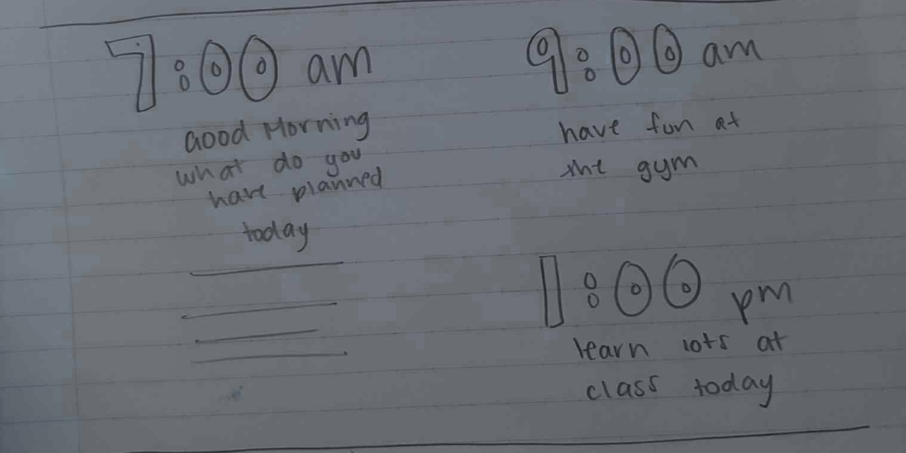
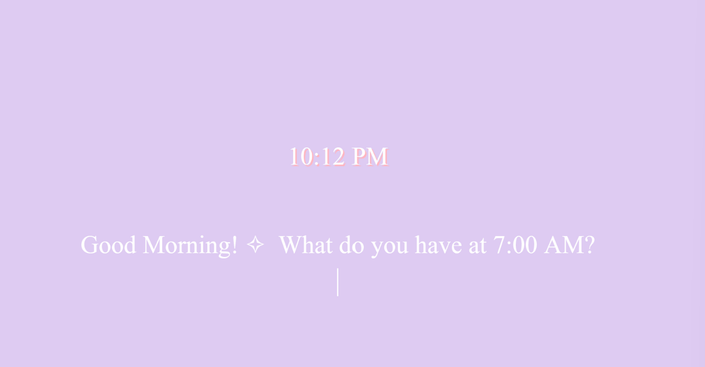
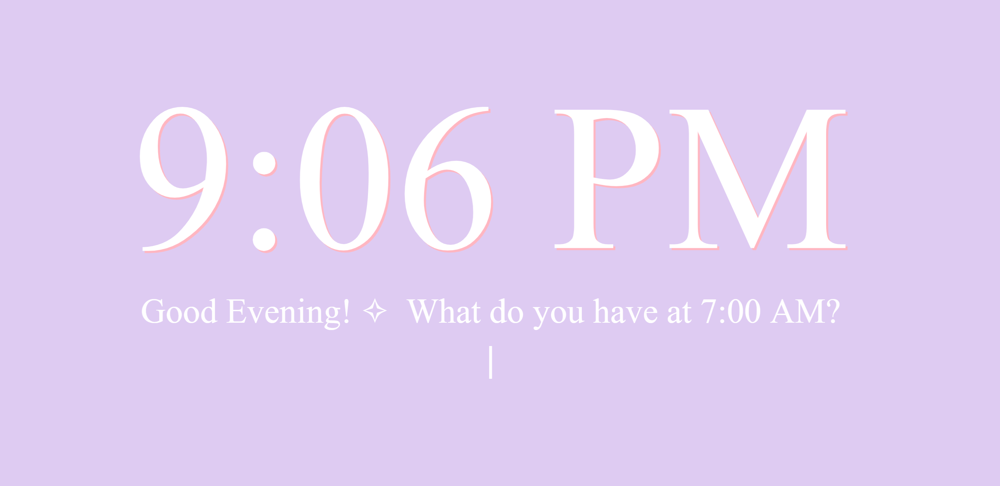
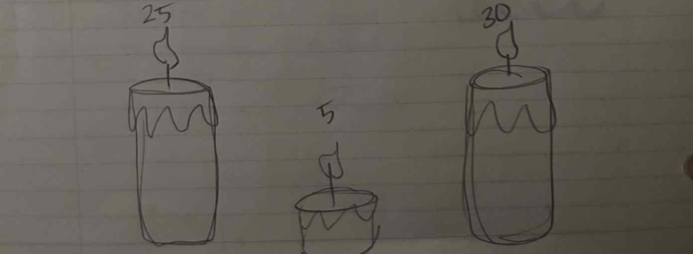
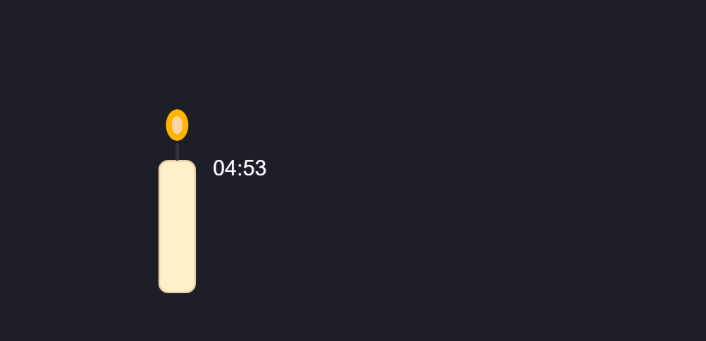
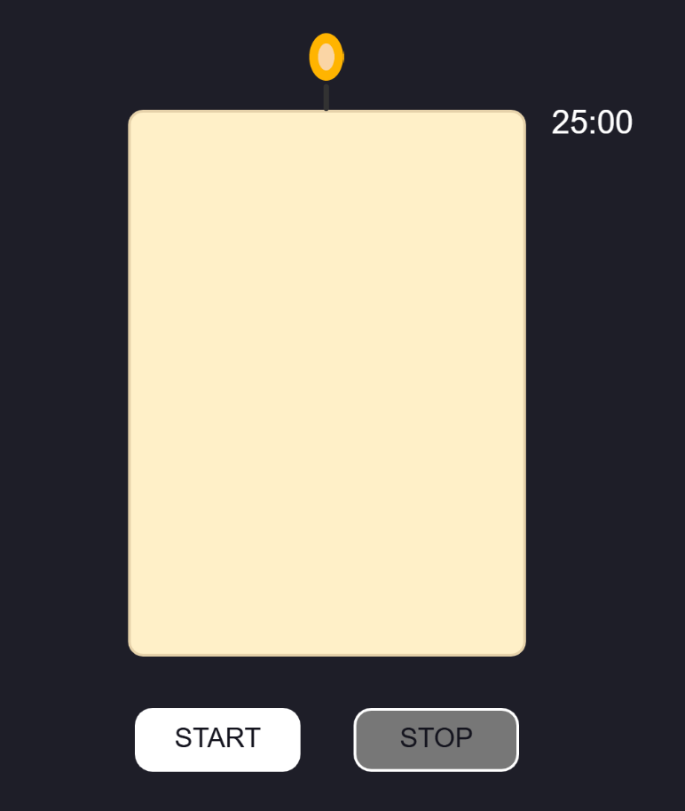

Sketch Narrative
- Context: This clock is for studying, and it prompts the user for their schedule throughout every the day. It will be used to plan out events and tasks, and users will receive hourly reminders and affirmations.
- Design decisions: I wanted to design a clock that could assist with day planning and motivation. I chose a minimalistic, pastel design to keep a clean, intuitive, and visually appealing platform, and I chose to prompt the user for their schedule, so that they can personalize the clock for their own use. Additionally, if the user had nothing planned for the hour, I automatically gave them a general uplifting message.
- Future work: I hope to improve the variety of messages provided, such as more insightful reminders or affirmations.
Sketch Evolution



Sketch Narrative
- Context: This clock is a timer based on a candle design, which melts and ultimately burns out once the time is up. It is based on an online trend where students time their studying by working until their candles burn out.
- Design decisions: This timer has a start and stop button, which gives the user more autonomy over when to begin and take quick breaks. The slowly melting candle helps the user quickly visualize how much time is left, and the numeric timer on the right shows that precise time.
- Future work: I hope to improve this design by implementing a feature that allows users to input their desired time or a redesign that implement the pomodoro studying method.
Sketch Evolution



Sketch Narrative
- Context: This clock is based on a bookshelf that adds to the cozy, focused ambiance of studying.
- Design decisions: Each shelf represents either the hour, minute, or second of the day. The number of books per shelf represents that amount, and the potted plant shows the time for quick understanding. The background color represents AM and PM by light and dark shades, respectively, helping users intuitively recognize the time while maintaining a relaxed study atmosphere. This design is meant to be used as a background webpage to use while studying.
- Future work: I hope to improve this design by adding more visual details, textures, and lighting effects that enhance a peaceful and studious scene.
Sketch Evolution